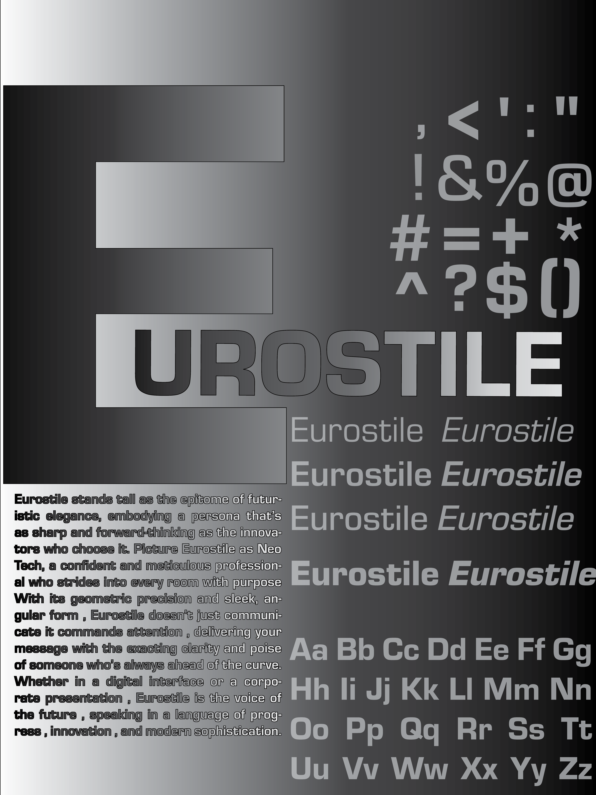

Photoshop
Poster
Combat Sports Fight Poster
Photo compositing, dramatic lighting, texture overlays, and bold typography.
Learned to balance mood with readability using lighting and layout control.
Design • Web • Motion • AI
I’m a Graphic Information Technology student focusing on full-stack web development. I blend a design-first mindset with clean front-end builds, motion design, and AI-assisted concept development.
Who I am and what I’m building toward.
I’m a Graphic Information Technology student with a background in high-pressure teamwork and leadership. I enjoy combining visual design with front-end development to create clean, modern, user-friendly interfaces.
My goal is to graduate with a strong portfolio that demonstrates creative design, motion, and solid technical foundations in web development.
Tools and technologies I work with.
Posters and layout projects.
Photo compositing, dramatic lighting, texture overlays, and bold typography.
Learned to balance mood with readability using lighting and layout control.

Vector-based design using hierarchy and spacing to guide attention.
Practiced layout planning and visual hierarchy.

Grid-based layout using paragraph and character styles.
Learned typographic systems and layout consistency.
Creative briefs, storyboards, and final motion pieces.
This section highlights motion design projects developed through a full creative workflow, including creative briefs, storyboarding, animation, effects, and final polish.
A 10-second motion graphic inspired by modern video game UI, featuring XP progression, glitch transitions, energy effects, and a rewarding level-up reveal.
Tools: After Effects • Motion Blur • Glow • Fast Box Blur
A five-second motion graphic that transforms a vibrating chip into a comic-style explosion of snack elements with bold timing, exaggeration, and playful energy.
Tools: After Effects • Wiggle Expression • Easy Ease • Compositing
A New Orleans-inspired motion graphic where a glowing orb brings Mardi Gras color and light to a monochrome Bourbon Street lamp scene.
Tools: After Effects • Glow • Color Transition • Camera Motion
Leadership, service, and professional development.
Emergency response, teamwork, and high-stress decision making.
Discipline, leadership, and mission-focused execution.
Web development, design tools, and AI-assisted workflows.
Professional workflows, collaboration, and AI-enhanced development.
Let’s connect.